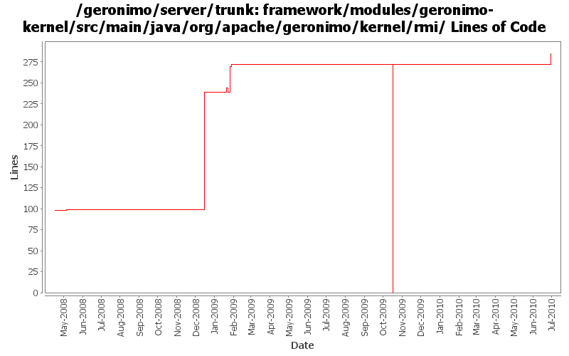

[root]/framework/modules/geronimo-kernel/src/main/java/org/apache/geronimo/kernel/rmi

| Author | Changes | Lines of Code | Lines per Change |
|---|---|---|---|
| Totals | 25 (100.0%) | 474 (100.0%) | 18.9 |
| djencks | 9 (36.0%) | 272 (57.4%) | 30.2 |
| gawor | 8 (32.0%) | 190 (40.1%) | 23.7 |
| dwoods | 2 (8.0%) | 9 (1.9%) | 4.5 |
| jdillon | 4 (16.0%) | 3 (0.6%) | 0.7 |
| mcconne | 2 (8.0%) | 0 (0.0%) | 0.0 |
let's make java.rmi.server.RMIClassLoaderSpi property configurable
14 lines of code changed in 1 file:
GERONIMO-4916 step 2 move sandbox osgi framework into trunk
272 lines of code changed in 4 files:
GERONIMO-4916 step 1 remove old framwork
0 lines of code changed in 5 files:
set java.rmi.server.hostname system property to the given host (GERONIMO-4518)
3 lines of code changed in 1 file:
provide hashCode() and equals() implementations for RMI client socket factory
31 lines of code changed in 1 file:
fix build problem
1 lines of code changed in 1 file:
GERONIMO-4518 revert changes mde in Rev736042
1 lines of code changed in 1 file:
GERONIMO-4518 Can't shutdown the server when host was set to 127.0.0.1 in config-substitutions.properties. Applied patch from Shawn Jiang.
8 lines of code changed in 1 file:
RMI client socket factories that set socket timeouts - should prevent automatic builds from getting stuck
95 lines of code changed in 2 files:
Support for binding to a specific ip address for RMI registry and JMX connectors (GERONIMO-4442)
46 lines of code changed in 2 files:
More loggers back to statics
2 lines of code changed in 1 file:
Start of custom SLF4J muck for Geronimo
1 lines of code changed in 1 file:
(GERONIMO-3985) Use SLF4J as the primary logging facade for Geronimo
0 lines of code changed in 2 files:
GERONIMO-3966 Fix to normalize codebase used by the RMI Classloader
0 lines of code changed in 2 files: